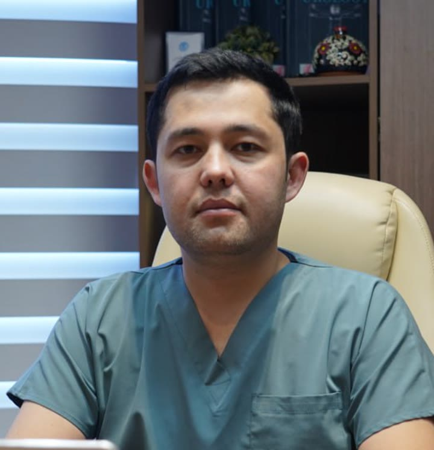

Yoʻnalishlar
Sizni nima bezovta qilyapti?
Oʻzingizga mos guruhni bosing.
Erkaklardagi urologik muammolarProstata, tosh, yalligʻlanish, nozik muammolar
- Prostata bezi kattalashuvi: kechasi tez-tez hojatga turish, siydik oqimi sustlashgani, toʻliq boʻshamaganlik hissi. Zamonaviy endoskopik usullar, jumladan HoLEP lazer operatsiyasi bilan davolanadi.
- Buyrak va siydik yoʻli toshi: belda yoki qorin yonida tutib-tutib ogʻriq, siydikda qon. Koʻp hollarda tosh kesiksiz, endoskop bilan maydalab olinadi.
- Yalligʻlanish: siyganda achishish, tez-tez siydik kelishi, qorin pastida ogʻriq.
- Erkaklar salomatligi: nozik muammolar maxfiy va hurmat bilan koʻriladi. Uyalmang, bu oddiy tibbiy savol.
Ayollardagi urologik muammolarSistit, siydik tutolmaslik, tosh
- Qayta-qayta qoʻzgʻaladigan sistit: siyganda achishish, tez-tez hojatga borish. Takrorlanayotgan boʻlsa, sababini topib davolash kerak.
- Siydikni tutolmaslik: yoʻtalganda, kulganda yoki zoʻriqqanda siydik chiqib ketishi.
- Buyrak va siydik yoʻli toshi: tutib-tutib ogʻriq, siydikda qon. Koʻp hollarda kesiksiz usulda olib tashlanadi.
- Koʻrik ehtiyotkorlik va hurmat bilan, maxfiy oʻtadi.
Chaqaloq va bolalardagi muammolarBolalar urologiyasi
- Tugʻma oʻzgarishlar: chaqaloqlik va bolalik davrida aniqlanadigan urologik nuqsonlar boʻyicha koʻrik va davolash.
- Buyrak va siydik yoʻli toshi: bolada qorin yoki belda ogʻriq, siydikda qon, tez-tez bezovtalanish. Bolalarda ham tosh koʻp hollarda kesiksiz, endoskop bilan olib tashlanadi.
- Siydik yoʻli infeksiyalari: bolada isitma, siyganda yigʻlash yoki bezovtalanish.
- Siydik chiqarishdagi muammolar: tez-tez yoki qiynalib siyish, kechasi siydik tutolmaslik.
- Bolalar urologiyasi boʻyicha maxsus malaka oshirgan.
Usul
Nega chandiqsiz jarrohlik?
Kesik yoʻq
Asbob tanadagi tabiiy yoʻl orqali kiritiladi. Terida chandiq qolmaydi.
Tez tiklanish
Ochiq operatsiyaga qaraganda kasalxonada kamroq yotasiz va ishga tezroq qaytasiz.
Ogʻriq deyarli sezilmaydi
Toʻqimalar juda kam shikastlanadi, shuning uchun operatsiyadan keyingi ogʻriq eng minimal darajada boʻladi.
Qabul
Qabul qanday oʻtadi
- 1
Yozilasiz
Telegram yoki telefon orqali qulay kun va vaqtni kelishamiz.
- 2
Koʻrik
Shikoyatlaringizni eshitaman, koʻrikdan oʻtkazaman. Oldingi UZI, KT va tahlil natijalaringizni olib keling.
- 3
Aniq reja
Tashxis va davolash yoʻlini tushunarli tilda tushuntiraman: dori bilanmi yoki operatsiya kerakmi.
Ishonch
Sertifikatlar va diplomlar
Toshkent, Moskva, Istanbul: 16 ta hujjat. Kattalashtirish uchun bosing.
Yoʻl
Tajriba
Toshkent tibbiyot akademiyasi, Urganch filiali
Rossiya Xalqlar Doʻstligi Universiteti (Moskva), urologiya
Yunusobod Medical Center, urolog-jarroh
Istanbul, Medistate: HoLEP lazer operatsiyasi boʻyicha kurs
Toshkent: xalqaro laparoskopik jarrohlik kursi
Bolalar urologiyasi boʻyicha malaka oshirish
Rossiya urologlari jamiyatining XXV kongressi
Savollar
Koʻp soʻraladigan savollar
Qabulga qanday yozilaman?
"Qabulga yozilish" tugmasini bosing va qulay yoʻlni tanlang: Telegram, Instagram yoki telefon.
Qabul qaysi kunlari?
Dushanbadan shanbagacha, soat 09:00 dan 18:00 gacha. Yakshanba dam olish kuni.
Operatsiyasiz davolasa boʻladimi?
Koʻp hollarda ha. Koʻp holatlar dori va kuzatuv bilan davolanadi, ayrim toshlarga esa toʻlqin bilan tashqaridan maydalash usuli mos keladi. Operatsiya faqat haqiqatan kerak boʻlganda tavsiya qilinadi.
Suv koʻp ichsam tosh oʻzi tushadimi?
Mayda tosh (taxminan 4 mm gacha) koʻpincha oʻzi tushadi. 7 mm dan kattasi odatda oʻzi chiqmaydi, unga muolaja kerak. Toshning oʻlchamini faqat UZI yoki KT aniq koʻrsatadi.
Operatsiya ogʻriqlimi?
Operatsiya narkoz ostida oʻtadi, jarayonda hech narsa sezmaysiz. Kesik boʻlmagani uchun keyingi ogʻriq ham minimal boʻladi.
Kasalxonada qancha yotaman?
Endoskopik operatsiyadan keyin odatda 1 kun. Koʻpchilik bemorlar ertasi kuni uyga ketadi.
Tosh yana paydo boʻladimi?
Boʻlishi mumkin. Shuning uchun toshni olib tashlash bilan birga uning sababini aniqlaymiz va qayta hosil boʻlmasligi uchun ovqatlanish va suv ichish boʻyicha maslahat beraman.
Oʻzim bilan nima olib kelay?
Oldingi UZI, KT, tahlil natijalari va ichayotgan dorilaringiz roʻyxati. Hech narsa boʻlmasa ham kelavering, kerakli tekshiruvni oʻzim belgilayman.
Qachon kutmasdan shifokorga borish kerak?
Kuchli ogʻriq bilan birga isitma va titroq boʻlsa yoki siydik umuman chiqmay qolsa, kutmang. Darhol 103 ga qoʻngʻiroq qiling yoki eng yaqin shifoxonaga boring.
Konsultatsiya narxi qancha?
Narx va boʻsh vaqtni telefon yoki Telegram orqali aniqlab oling.
Viloyatdan kelsam boʻladimi?
Ha. Avval Telegramga yozing, tahlillaringizni yuboring, keyin kelish kunini birga kelishamiz.
Manzil
Yunusobod Medical Center
Toshkent, Yunusobod 16-mavze, A. Donish koʻchasi, 28a
Moʻljal: «Chempion» bari
Dushanba - shanba, 09:00 - 18:00
Foydali videolar